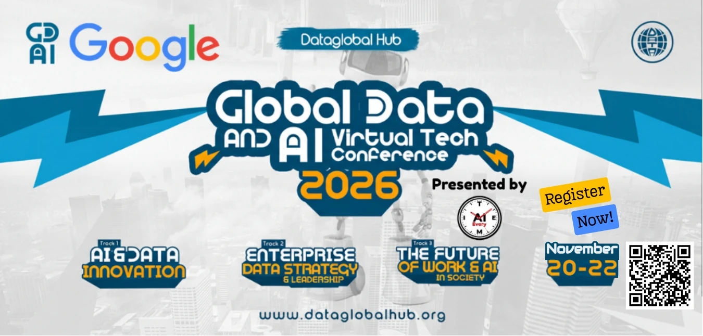

- Featured Event
- Virtual
- November 20-22, 2026
- Best Convention 2025 Winner
Global Data & AI Virtual Tech Conference 2026
The award-winning AI-native virtual conference returns. Explore AI, data, and the future of innovation in the metaverse with 140+ speakers, 1,000+ sessions, and attendees from 60+ countries. Presented by AI Every Time, hosted by DataGlobal Hub.
View Event DetailsGet Tickets